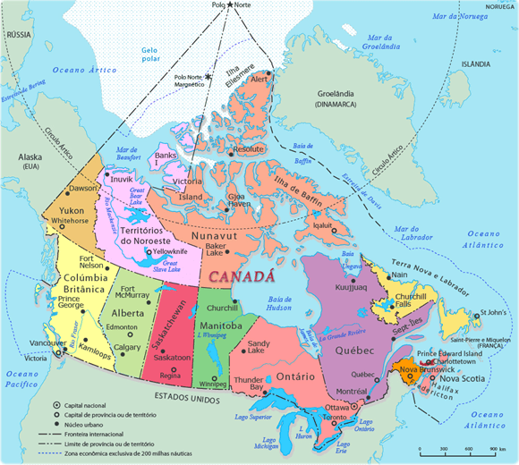

Canadá: Aspectos Gerais

Fonte: Organizado pelo autor.
Clima e Vegetação
O Canadá, o segundo maior país do mundo em área territorial, é famoso por seu clima variado, que vai desde as regiões árticas no norte até climas mais temperados no sul. A maior parte do território canadense está localizada em zonas de clima subártico e polar, onde as temperaturas no inverno podem cair abaixo de -30°C, especialmente nas províncias do norte e nos Territórios do Noroeste, Yukon e Nunavut. As florestas boreais, compostas principalmente de coníferas, dominam grande parte da paisagem canadense, sendo uma das maiores reservas de florestas contínuas do mundo. Já nas regiões mais ao sul, como nas províncias de Ontário e Quebec, o clima é temperado, com verões mais quentes e invernos menos rigorosos, permitindo uma vegetação mais diversificada, incluindo florestas temperadas decíduas.
Fato Interessante: A maior parte da população canadense vive perto da fronteira com os EUA, onde o clima é mais ameno e as condições para agricultura e habitação são mais favoráveis. Cerca de 75% dos canadenses vivem a menos de 150 km da fronteira com os Estados Unidos, concentrados principalmente nas regiões metropolitanas de Toronto, Montreal e Vancouver.
Hidrografia
O Canadá possui uma das maiores reservas de água doce do mundo, abrigando cerca de 20% de toda a água doce do planeta. A rede hidrográfica canadense é composta por milhares de lagos, rios e cursos d'água que desempenham um papel crucial na economia e na ecologia do país. Os Grandes Lagos, localizados na fronteira entre o Canadá e os Estados Unidos, são uma das maiores e mais importantes bacias de água doce do mundo. O Rio São Lourenço, que conecta os Grandes Lagos ao Oceano Atlântico, é uma importante via de transporte e comércio, especialmente para a província de Quebec e a região dos Grandes Lagos.
Fato Interessante: O Lago Superior, parte dos Grandes Lagos, é o maior lago de água doce do mundo em termos de área e contém 10% da água doce superficial do mundo.
Economia
A economia canadense é altamente diversificada, com uma forte presença de setores baseados em recursos naturais, como mineração, petróleo e gás. As províncias de Alberta, Saskatchewan e Terra Nova e Labrador são ricas em recursos energéticos, incluindo petróleo, gás natural e areias betuminosas. O Canadá também é um dos maiores produtores e exportadores de madeira e papel, com vastas florestas que sustentam essa indústria.
Além dos recursos naturais, o Canadá tem uma economia moderna e desenvolvida, com setores como tecnologia da informação, biotecnologia, manufatura e serviços financeiros desempenhando papéis importantes. A cidade de Toronto, em Ontário, é o maior centro financeiro do país e uma das principais cidades globais no setor financeiro.
Fato Interessante: O Canadá é o quinto maior produtor mundial de petróleo, com grande parte de sua produção proveniente das areias betuminosas de Alberta. Apesar de sua grande dependência da indústria de recursos naturais, o Canadá tem feito esforços significativos para diversificar sua economia e investir em tecnologias verdes.
Cultura e Multiculturalismo
O Canadá é amplamente reconhecido por sua política de multiculturalismo, que foi oficialmente adotada em 1971. Essa política reflete o compromisso do país em reconhecer e celebrar a diversidade cultural, incentivando a integração das comunidades étnicas sem forçá-las a abandonar suas identidades culturais. Toronto, a maior cidade do Canadá, é um exemplo vivo dessa diversidade, com mais de 50% de sua população nascida fora do país e centenas de idiomas sendo falados em suas ruas.
Fato Interessante: Em 1971, o Canadá se tornou o primeiro país do mundo a adotar oficialmente uma política de multiculturalismo. Isso foi um marco na história do país, promovendo uma visão inclusiva e diversa da sociedade canadense.
A Questão do Quebec
O Quebec é a única província canadense com uma população majoritariamente francófona, e sua forte identidade cultural e linguística tem sido uma fonte de tensões políticas ao longo da história canadense. Desde a década de 1960, o movimento separatista em Quebec tem lutado pela independência da província, argumentando que a cultura e a língua francesa devem ser protegidas e promovidas de forma mais autônoma do resto do Canadá.
Em 1995, o Quebec realizou um referendo sobre a independência, que foi rejeitada por uma margem extremamente estreita, com 50,58% dos votos contra a separação. Desde então, o movimento separatista perdeu força, mas a questão da identidade quebequense continua a ser um tema central na política da província.
Fato Interessante: Em 1995, o referendo sobre a independência de Quebec foi rejeitado por apenas 54.288 votos, de um total de mais de 7,5 milhões de votos, destacando a profunda divisão na província sobre a questão.
Considerações Finais
O Canadá, com seu vasto território e diversidade cultural, é um país de contrastes geográficos e sociais. Desde as geladas tundras do norte até as movimentadas metrópoles do sul, o país oferece uma rica tapeçaria de paisagens e culturas. A questão do Quebec e a política de multiculturalismo são exemplos de como o Canadá navega as complexidades de sua identidade nacional em um mundo globalizado.